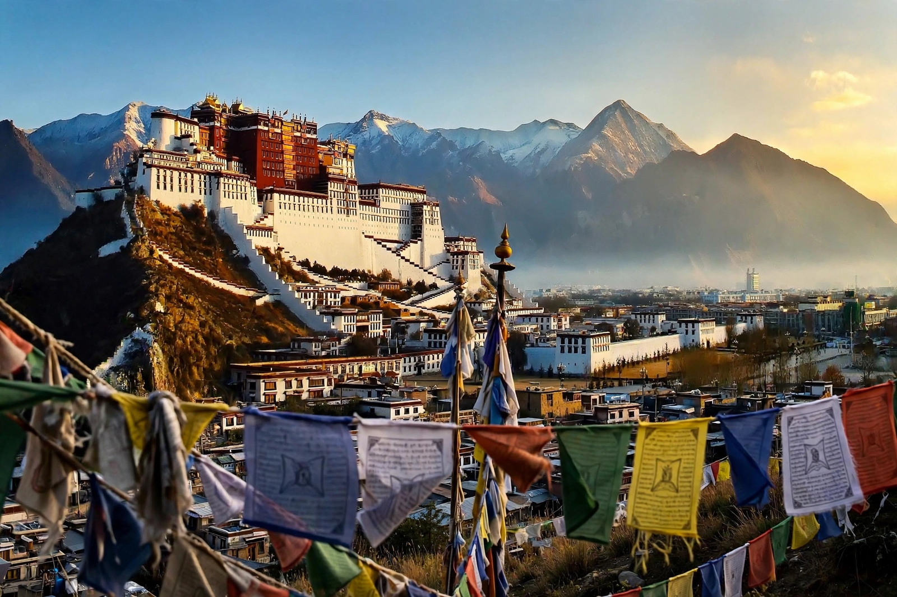

From Wikipedia, the free encyclopedia
| Lhasa | |
|---|---|
| Country | China (Tibet Autonomous Region) |
| Elevation | About 3,650 m |
| Landmark | Potala Palace |
| River | Lhasa River (Kyi Chu) |

Lhasa is the capital of the Tibet Autonomous Region of China and the traditional capital of Tibet, set in a valley of the Himalayas at about 3,650 metres above sea level — one of the highest cities in the world. Its name means 'place of the gods'.
The city's great landmark is the Potala Palace, the vast winter residence of the Dalai Lamas from the 7th Dalai Lama until the 14th fled in 1959; the Jokhang Temple is Tibetan Buddhism's holiest shrine, ringed by the Barkhor pilgrim circuit. Lhasa has been Tibet's religious and political heart since the 7th-century emperor Songtsen Gampo, and its culture is centred on Tibetan Buddhism.